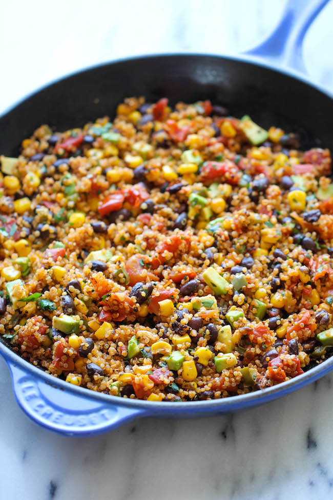

Quinoa

Description
With a fun Mexican twist, this dish is chockfull of so many amazing flavors,
from the tangy lime juice to the hint of spiciness from the chili powder and
jalapeno. And not only is this healthy and nutritious but it's also unbelievably
easy to make. Simply throw everything into the skillet and that's it. Even the quinoa
is cooked right in the pan, really letting the flavors soak in.
Ingredients
- 1 tablespoon olive oil
- 2 cloves garlic, minced
- 1 jalapeno, minced
- 1 cup quinoa
- 1 cup vegetable broth
- 1 (15-ounce) can black beans, drained and rinsed
- 1 (14.5-ounce) can fire-roasted diced tomatoes
- 1 cup corn kernels, frozen, canned or roasted
- 1 teaspoon chili powder
- 1/2 teaspoon cumin
- Kosher salt and freshly ground black pepper, to taste
- 1 avocado, halved, seeded, peeled and diced
- 2 tablespoons freshly squeezed lime juice
- 2 tablespoons chopped fresh cilantro leaves
Steps
- Heat olive oil in a large skillet over medium high heat. Add garlic and jalapeno, and cook, stirring frequently, until fragrant, about 1 minute.
- Stir in quinoa, vegetable broth, beans, tomatoes, corn, chili powder and cumin; season with salt and pepper, to taste.
- Bring to a boil; cover, reduce heat and simmer until quinoa is cooked through, about 20 minutes.
- Stir in avocado, lime juice and cilantro.
- Serve immediately.